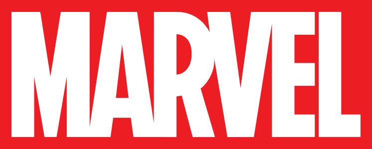
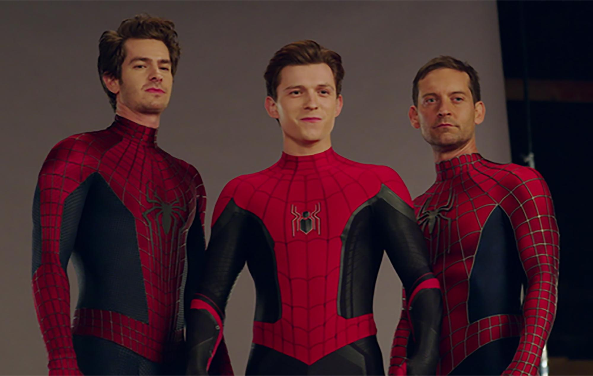
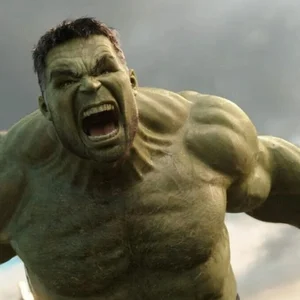
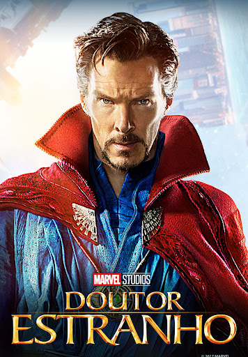
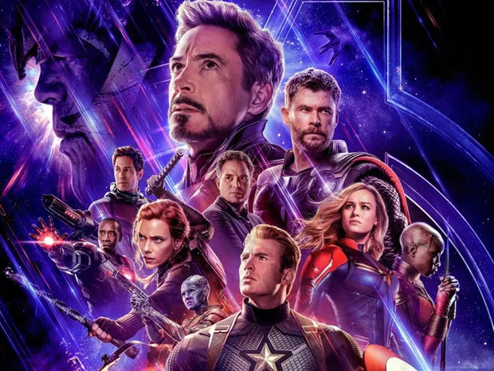

Abaixo vao ver meus herois favoritos
Esse e Tony Stark ( O Homem de Ferro ), Quem e ele sem armadura? genio, biolionario, playboy, filantropo. Alem disso fundador das industrias Stark
O tony foi o protagonista de muitos filmes dos avengers (Vingadores), inclusive no ultimo onde se sacrificou pelos seus companheiros na luta contra o thanos. Mas alem disso teve tres filmes dele mesmo
Todos os filmes do heroi venderam muito bem filmes com lutas bem elaboradas. A triologia do Homem de ferro no universo cinematografico Marvel acompanha a evolucao de Tony Stark de um genio bilionario egocentrico a um heroi altruista.

O Espetacular Homem Aranha, pra mim o meu favorito.Lutas bem elaboradas inclusive a luta contra o Eletrico boas imersoes e como nao falar da coisa mais triste desse filme a morte da nossa querida e inesquecivel Gwen Stacy
O Tobey recebeu o titulo de o Homem aranha mais forte pelo seus feitos nos filmes da sua franquia. O Tobey pra mim teve os filmes mais viciantes para assistir em sequencia muitos viloes lore bem construida e tudo mais.Pelo menos nao perdeu sua M.J.
Os filmes do tom sao bem mais descontraidos, uma coisa mais solta mais infantil mas com boas lutas e boa lore. Mas nos filmes do tom ele e um homem aranha mais infantil tirando esse ultimo filme Um novo dia
, mas nos outros ele parece uma pessoa fragil dependente do outros principalmente do Tony, coisa que os homens aranhas nao tem. Fora isso um otimo aranha.

Tambem com alguns filmes no seu curriculo de carreira solo esse e o Incrivel Hulk
o nosso verdinho maioria do tempo calmo mais um deslize eee..., ahaha brincadeiras a parte esse nosso hulk, nao a muito oque falar forte,rapido,praticamente indestrutivel esse e o nosso verdao

Se eu tivesse que escolher um poder com certeza seria o do nosso mago. O Doutor Estranho e o Stephen Vicent Strange,um ex-neurocirurgiao brilhante e arrogante que se tornou o mago supremo e principal protetor da terra contra ameacas misticas

simplismente uma das melhores da Marvel, todos os filmes da franquia foram bem aceito pela critica.
As quatro produções centradas na equipe principal dos Vingadores possuem recepção muito positiva, mas se organizam da seguinte forma em termos de notas médias da crítica:
3º Vingadores: Guerra Infinita (2018): Nota média de 7.6/10. Destacado por muitos críticos como o roteiro mais corajoso e bem estruturado do estúdio ao elevar o risco real com a vitória do vilão Thanos.4º Vingadores: Era de Ultron (2015): O mais abaixo no gosto geral da crítica devido a repetições de fórmulas do primeiro filme e excesso de tramas preparatórias para o futuro do estúdio, embora elogiado pelas adições de novos heróis.
Abaixo fiquem com um video do canal Ei Nerd sobre os vingadores
Nessa proxima etapa do nosso site vcs verao algo muito legal


Clique na imagem e seja redirecionado para compra
meu nome e leonardo